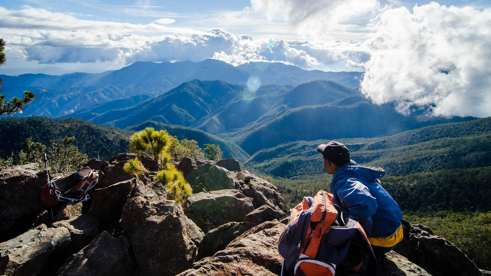

Dominica Nature island of the caribbean
Covered with mostly untouched forest and the friendly
warm welcoming people have made Dominica the hikers paradise.
With lush rainforest, 365 rivers, waterfalls, and volcanic peaks,
the island has something for everyone.